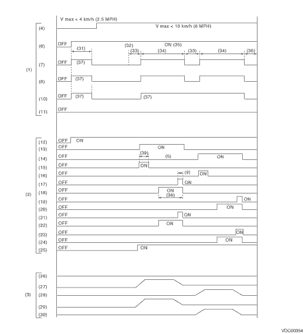

VEHICLE DYNAMICS CONTROL (VDC) > VDC Sequence Control
1. While the VDC sequence control is performed, the operation of the VDCH/U can be checked after operation of the VDCH/U solenoid valve, using the brake tester or pressure gauge.
2. VDC sequence control can be started by Subaru Select Monitor.
1. VDC SEQUENCE CONTROL WITH SUBARU SELECT MONITOR
1. Connect the Subaru Select Monitor to the Subaru data link connector, located next to the lower cover under the driver’s side instrument panel.
2. Turn the ignition switch to ON.
3. Set the Subaru Select Monitor switch to ON.
4. Set the Subaru Select Monitor to the “Brake Control” mode.
5. When the “VDC Inspection Mode” is selected from the “Function check sequence” menu, the “VDC sequence control” will start.
6. If “Press the YES key” is displayed, press the «YES» key.
7. The brake system being operated is displayed on the Subaru Select Monitor.
2. CONDITIONS FOR VDC SEQUENCE CONTROL

|
(1) |
Operation guide line of the sequence control |
(14) |
Primary cut valve |
(27) |
FL wheel cylinder pressure |
|
(2) |
Operation pattern of sequence control |
(15) |
Secondary suction valve |
(28) |
FR wheel cylinder pressure |
|
(3) |
Operating pressure of sequence control. |
(16) |
Primary suction valve |
(29) |
RR wheel cylinder pressure |
|
(4) |
All wheel speeds |
(17) |
FL outlet solenoid valve |
(30) |
RL wheel cylinder pressure |
|
(5) |
Within 0.4 seconds |
(18) |
FL outlet solenoid valve |
(31) |
Approx. 2 sec. |
|
(6) |
Ignition switch |
(19) |
FR outlet solenoid valve |
(32) |
Point A |
|
(7) |
ABS warning light |
(20) |
FR inlet solenoid valve |
(33) |
1.0 sec. |
|
(8) |
VDC warning light |
(21) |
RR outlet solenoid valve |
(34) |
3.4 sec. |
|
(9) |
0.4 sec. |
(22) |
RR inlet solenoid valve |
(35) |
Engine ON |
|
(10) |
VDC indicator light |
(23) |
RL outlet solenoid valve |
(36) |
1.6 sec. |
|
(11) |
Pressure sensor |
(24) |
RL inlet solenoid valve |
(37) |
Light ON |
|
(12) |
Valve relay |
(25) |
Pump motor |
(38) |
0.8 sec. |
|
(13) |
Secondary cut valve |
(26) |
Master cylinder pressure |
(39) |
1.0 sec. |
NOTE:
Operation starts from point A.